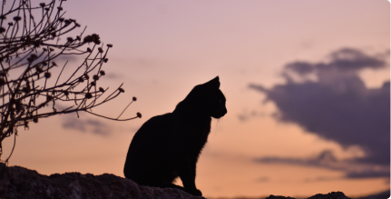

Os gatos são animais fascinantes e cercados de
mistérios. De temperamento independente e
misterioso,
esses felinos são conhecidos por sua
agilidade, elegância e um comportamento muitas
vezes imprevisível.
Contudo, recentemente, uma
teoria tem ganhado espaço na internet e entre
teóricos de conspiração: seriam
os gatos
astronautas?
A teoria sugere que os gatos não são animais
terrestres, mas sim seres extraterrestres enviados
para
realizar uma missão específica em nosso
planeta. Há relatos históricos que apontam para o
fato de que os
gatos eram considerados seres
sagrados em diferentes culturas e até mesmo
associados a figuras divinas.
Isso poderia indicar
que os gatos têm uma origem muito mais mística
do que se pensava anteriormente.
Além disso, há teóricos que acreditam que os
felinos possuem habilidades telepáticas e são
capazes de se
comunicar com outras espécies
alienígenas. Essa crença baseia-se em relatos de
pessoas que afirmam
terem visto gatos reagindo a
estímulos que não são perceptíveis aos seres
humanos, ou até mesmo
se comportando de
maneira incomum durante eventos astronômicos,
como uma aurora boreal. Esses e outros
indícios
foram interpretados como sinais de que os gatos
seriam seres interplanetários.
